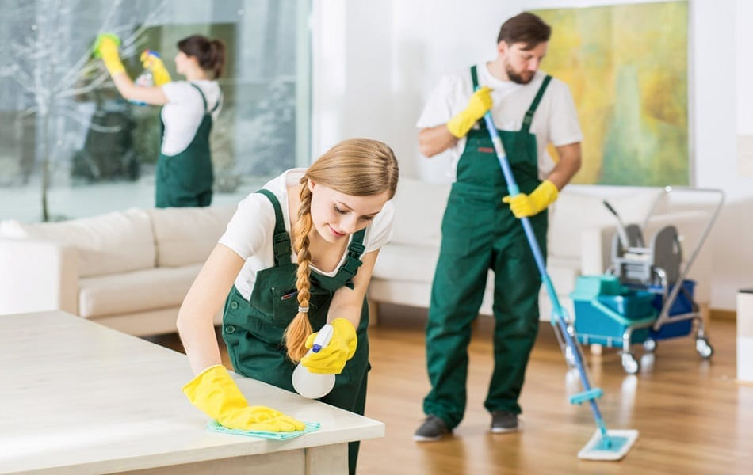

Tentang Kami
Jo Clean adalah layanan jasa home cleaning service untuk Anda. Kami menyediakan berbagai layanan tentang bersih-bersih rumah. Berbagai macam layanan seperti, Deep Cleaning (Rumah dan Toilet), dan General Cleaning. Semua layanan jasa kebersihan rumah ini, bisa Anda pesan secara online melalui website JoClean. Tidak hanya untuk rumah, kami juga hadir untuk membersihkan apartemen, kantor hingga rumah kost. Semua ini kami hadirkan untuk memenuhi kenyamanan dan kebersihan tempat tinggal atau hunian yang Anda pilih. Kami hadir memberikan solusi bagi Anda yang tinggal di area Jambi. Jo Clean memiliki tenaga pembersih yang terpercaya yang dipilih secara selektif dan telah diberikan pelatihan khusus. Jo Clean menyediakan tenaga pembersih profesional dan terpercaya yang telah melalui proses seleksi dan pelatihan secara bertahap. Proses seleksi dilakukan dengan memastikan kandidat sehat secara jasmani dan rohani serta berperilaku baik. Proses pelatihan dilakukan secara bertahap dimulai dengan pengenalan materi perusahaan dan praktik lapangan didampingi oleh tenaga pembersih yang lebih senior dan berpengalaman. Kami percaya bahwa meningkatnya konsumen kelas menengah harus memiliki kemudahan akses untuk layanan pembersihan yang berkualitas tinggi, terjangkau, penjadwalan yang fleksibel, dapat dipercaya, profesional serta ramah terhadap pelanggan. Tertarik untuk bergabung dan ingin mengetahui tentang kami? Hubungi kami di partnership@jocleanpartner.com